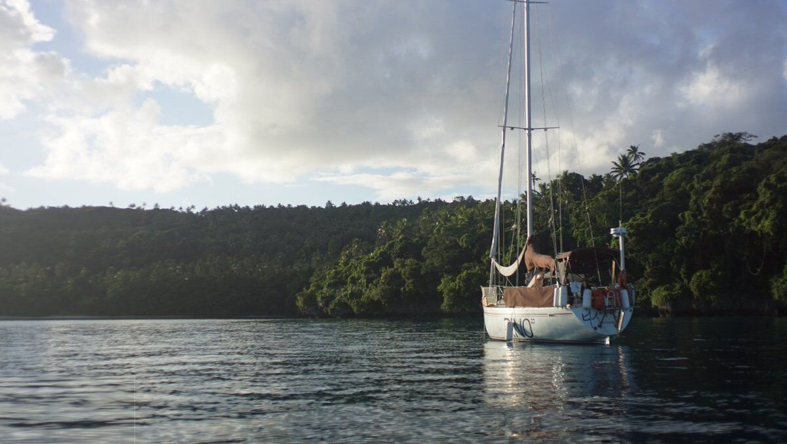

tonga
In mid August 2017, we sailed to Tonga from Niue, and stayed for 2 1/2 months.
On arrival, we anchored south of Lotuma Island (anchorage #5), right outside of Neiafu. It was sunday, and we knew that they could not process us weekends. We put up our quarantine flag, and waited till morning to go. We like not having to check in right away. Having to meet officials right after an ocean passage is tiring.
The next day we moved onto the check-in dock, a concrete pier lined with big rubber tires. There were other boats in line before us on a dock perpendicular to ours, we wondered how long we'd have to wait. We watched them process each boat, before they came aboard Pino. The sun was still high in the sky, it appeared that we would get to explore the city today after all.
We tied Pino to a mooring buoy in town. It it possible to anchor in Neiafu, but most of the bay is very deep, and the shallows are occupied by moorings. The only good anchoring spots are very far from town, south of the main mooring field. We anchored in that area once, to try it. Our chain snagged on a few coral heads down there, but we did not have trouble pulling it back up again. Anchoring there was interesting, we could hear fruit bats at night screaming in the trees.
Neiafu had a small area lined with shops, where we could buy staples like flour and rice. We visited the town fresh food market often. It was outside, with vendors coming everyday to sell their produce. There were baskets of taro root, fresh shelled peanuts, melons, carrots, herbs etc. The town changed when cruiseships came. There were stands everywhere, offering services and souvenirs, and the locals would put on a show, dressing in traditional wear. The ships never stayed long, and when they'd leave the townspeople would start dressing in plain clothes again.
Tongans turned to Christianity after a visit from Methodist missionaries in 1822. They are ardent churchgoers. Even the colors and symbols on their flag have religious meaning. All of the school kids wear uniforms in the colors of their respective churches (light blue for Catholic, royal blue for Wesleyan...) and Red for Government Schools. They wear a Ta'ovala—a woven mat wrapped around the waist—bordered (with school colours) and a tupenu (wrapped garment, worn by boys) with a white button-up shirt and roman-type sandals. We liked seeing the different uniforms, although at the time we did not make the connection between the color of their clothes and the different religions.
The restaurants and cafes in Neiafu like to provide services for tourists, and cruisers. Cafe Tropicana serves coffee, sells kava, and offers the use of computers, printers and scanners. Also, they have a binder full of film titles, which you can 'buy' for a small fee. They might also charge you nothing, if you can give them films they do not already have. We thought this blackmarket of digital film was funny, but were disappointed with their list of titles. They lent us a cart once so we could bring our jerry cans ashore to a gas station to fill them. They are very friendly, and offer many more services.
Recycling and Waste. Aquarium Cafe (closer to the main dinghy dock) helps boaters recycle and dispose of trash, for a fee. They also offer water refills (again, for a price). They have a tab system. You never have to pay right away, but you're expected to before you leave. An Oyster boat rally passed through town once, and they left a pile of trash on their doorstep without paying. The owner was very angry. When we left, the cafe had just purchased a glass crusher, to further process some of the waste.
Waste is a problem in Pacific Island countries because of their limited land area, and the problem will only get worse because of the rising volumes of solid waste and the need to export increasing amounts of recyclable goods. A change from a traditional diet of fish, root crops and fruits and vegetables to a more convenient, cheaper, western diet of imported, less healthy packaged food such as noodles, salty snacks and fatty meat has accelerated in recent years. The reason for this shift is the decrease in local food production as a result of urbanisation and increased imports of cheaper but less healthy food, together with increased trade with western countries. [Ref. P.14].
Countries like Tonga are remote, it is difficult to export recyclable goods to manufacturers who can reuse them because shipping costs are high. Local economies are too small to support country-wide management plans, and there is lack of a functional recycle market and system. There are initiatives for waste management in the works, but we hope that they consider reducing consumption and re-think their dependence on recycling. This overliance on the effectiveness of recycling has enabled terrible habits in the Western world.
Port Maurelle. We spent most of our time tucked into Port Maurelle, a bay sheltered from most directions except from the west. It was perfect for swimming. We saw many wonderful sea creatures here, like octopus, sea turtles, cuttlefish, needle fish, rainbow fish etc. Devine liked to swim in the deeps, and was able to dive down to 9 m (30 ft) with a snorkle and mask, without fins. We dropped a towel once, it settled in the sand underneath Pino and Devine was able to retrieve it. Rek is a long-distance surface swimmer, and would circle the entire bay almost every day. We liked to play catch on the beach, and enjoyed cartwheeling in the shallows.

There are many caves to explore in the area, like Swallows and Mariner's cave. Swallow's cave (18°40.945 S, 174°02.845 W) is navigable from Port Maurelle by dinghy, by following the north coast of anchorage and going around the corner of Kapa Island. It is common to visit Mariner's cave (18°41.451 S, 174°04.492 W) by sailboat, with one person idling the craft outside while the crew dive (there is nowhere to anchor here). The cave is accessible by diving 1 to 3 meters underwater, and by swimming 3 meters underwater to come up inside the cave. Because the cave opens to the west, it is best to go mid-afternoon so that the angle of the sun can light up the cave from the entrance.
We visited Mariner's cave with our friends from the sailboat Sula, and dove without fins, with a snorkel only. We had to time our entrance and exit with the swell, otherwise it is too difficult to swim against it. Being in the pocket of air inside the cave is a very strange experience. When the waves roll in, the water compresses the air inside of the cave and creates an instant foggy veil. It dissipates as the swells comes out again. The compression also messes with your ears. It was freaky, an experience that we recommend —unless you are claustrophobic.
See a video from our dive in Mariner's cave, it shows the entrance of the cave well, and the feel when you're inside.
Port Maurelle had no services, if we wanted to get food we had to sail to Neiafu.
We also anchored in the North Tapana anchorage (18°42.283 S 173°59.101 W) . Again, there is not much in terms of provisions ashore, but the beach is nice, as is diving. There are also a few moorings you can pick up for a free. If you plan to take a mooring, call cafe Tropicana on the radio to tell them, and when you return to Neiafu visit them to pay your dues.
While there, we worked on Markl. Pino's next stop after Tonga was New Zealand.
For information cruising Tonga, check out these guides. We downloaded them all and kept them on external HD to refer to. They were all incredibly useful.